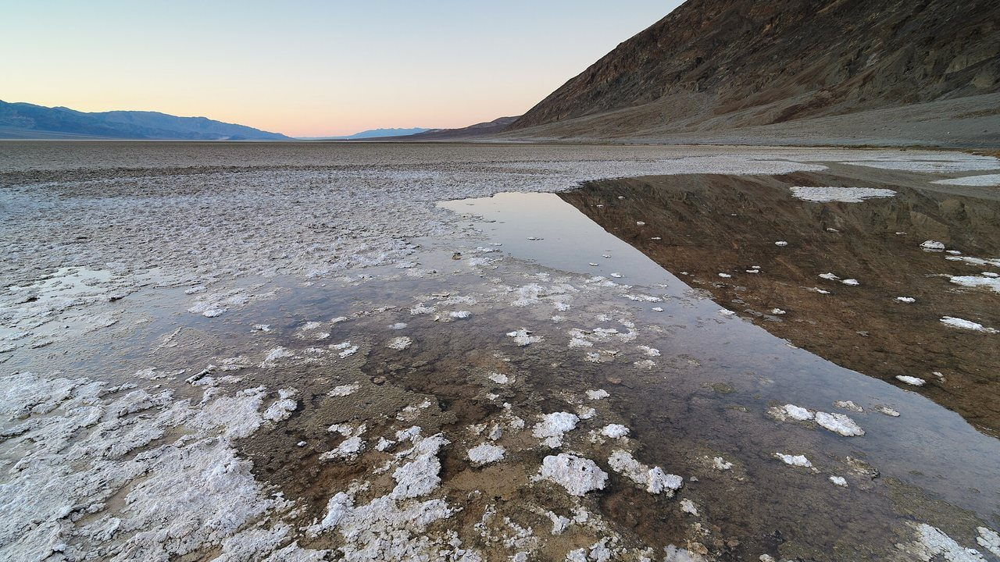

Race, Death Valley

Behind
Best +0:01
371W
Target 418 W-47 W
- Cadence
- 87rpm
- Heart
- 140bpm
- Speed
- 26.5km/h
Work2 of 15
0:23
Next: · 0:30 at level 18
+0.5%
3 m climbed
2.28 km
14
Resistance / 32
Solo races your best-time ghost: position reads Ahead or Behind, and solo alone gets a Pause button. Frozen at 5:37.